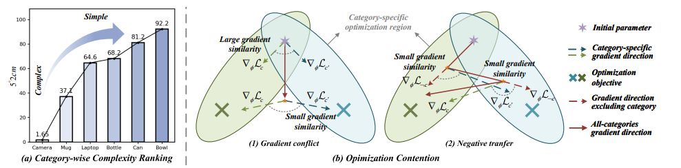
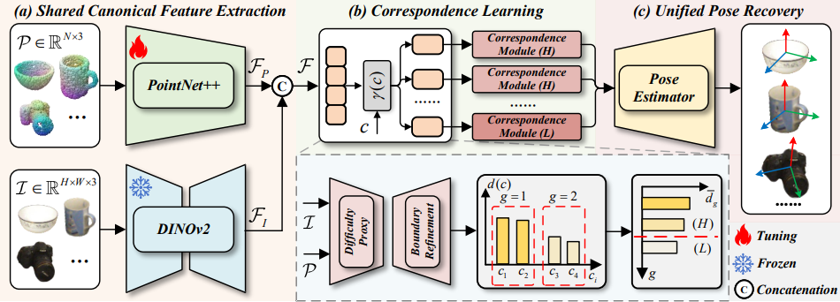
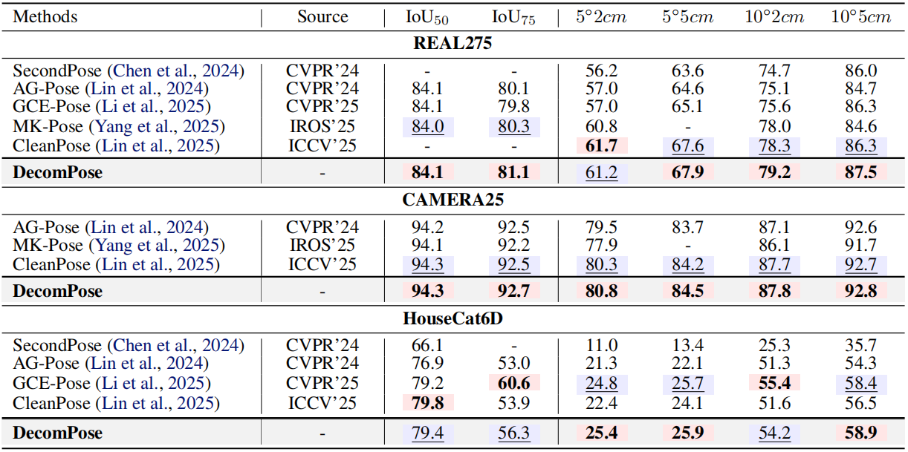
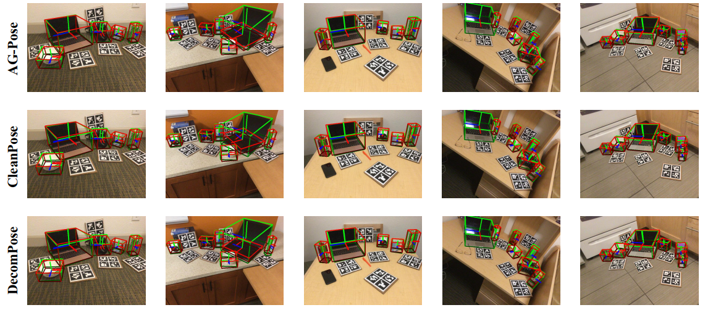

Abstract
Category-level 6D object pose estimation is typically formulated as a multi-category joint learning problem with fully shared model parameters. However, pronounced geometric heterogeneity across categories entangles incompatible optimization signals in shared modules, resulting in gradient conflicts and negative transfer during training. To address this challenge, we first introduce gradient-based diagnostics to quantify module-level cross-category contention. Building on these diagnostics, we propose DecomPose, a difficulty-aware decomposition framework that mitigates optimization contention via: (1) difficulty-aware gradient decoupling, which groups categories using a data-driven difficulty proxy and routes each instance to a group-specific correspondence branch to isolate incompatible updates; and (2) stability-driven asymmetric branching, which assigns higher-capacity branches to structurally simple categories as stable optimization anchors while constraining complex categories with lightweight branches to suppress noisy updates. Extensive experiments on REAL275, CAMERA25, and HouseCat6D demonstrate that DecomPose effectively reduces cross-category optimization contention and delivers superior pose estimation performance across multiple benchmarks.
Method

Experiment


BibTeX
@misc{gao2026decomposedisentanglingcrosscategoryoptimization,
title={DecomPose: Disentangling Cross-Category Optimization Contention for Category-Level 6D Object Pose Estimation},
author={Yifan Gao and Lu Zou and Zhangjin Huang and Guoping Wang},
year={2026},
eprint={2605.15728},
archivePrefix={arXiv},
primaryClass={cs.CV},
url={https://arxiv.org/abs/2605.15728}
}